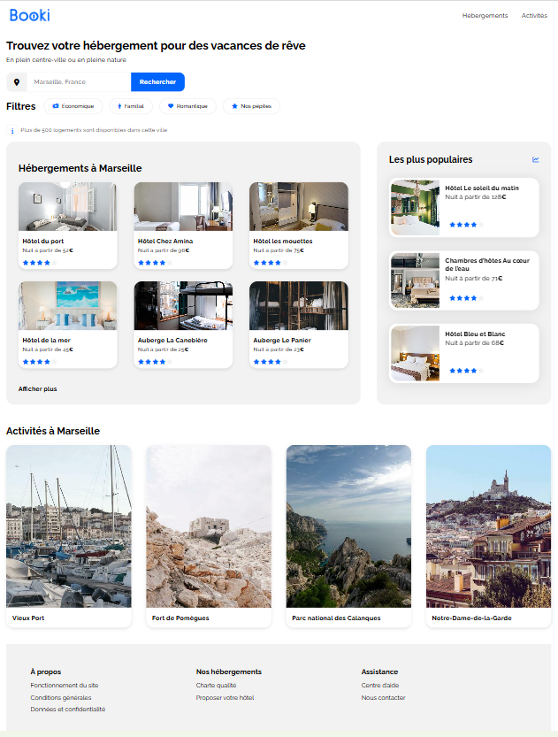

Projet Booki
Site de recherche d’hébergements pour des vacances.
Maquette

Description
Contexte : Dans le cadre de ma formation, j’ai réalisé l’intégration du site Booki à partir d’une maquette Figma, avec un enjeu fort de respect du design et d’adaptabilité multi-écrans.
Objectifs : Intégrer fidèlement une interface en HTML et CSS tout en implémentant un design responsive fonctionnel sur desktop, tablette et mobile.
Stack technique : HTML5, CSS3, Flexbox, media queries, Figma, GitHub.
Compétences développées : J’ai renforcé ma maîtrise de l’intégration web et appris à structurer une page responsive, en surmontant des difficultés liées à la compréhension des media queries et des layouts adaptatifs.
Résultats et impact : Le site est entièrement responsive et conforme à la maquette, avec un code versionné via Git et des commits structurés.
Perspectives d'amélioration : Optimiser le code CSS (factorisation, méthodologie type BEM) et améliorer les performances de chargement.